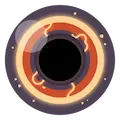
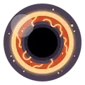
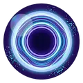
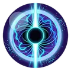
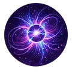
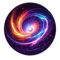

O mais extremo já observado
Alguns fenômenos do universo operam nos limites da física conhecida. Estudá-los não é apenas curiosidade — é compreender até onde a realidade pode ir.

Buraco NegroTamanho: Variável
Gravidade: Extrema
Escape: Impossível
Curiosidade: Nem a luz escapa

SupermassivoMassa: Bilhões de sóis
Local: Centro galáctico
Função: Estrutural
Curiosidade: Define galáxias

Estrela de NêutronsTamanho: ~20 km
Densidade: Extrema
Gravidade: Intensa
Curiosidade: Matéria ultra comprimida

PulsarTipo: Rotativo
Emissão: Pulsos
Velocidade: Altíssima
Curiosidade: Funciona como um farol cósmico

MagnetarTipo: Estrela de nêutrons
Campo: Extremamente forte
Energia: Instável
Curiosidade: Pode deformar matéria

Buraco de MinhocaNatureza: Teórica
Função: Atalho no espaço-tempo
Estabilidade: Incerta
Curiosidade: Possível viagem instantânea